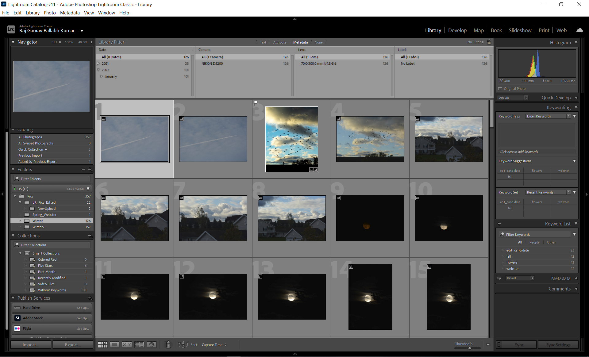

1) Lightroom
Chapter 0: Interesting Links
Chapter 1: Matt Granger Tutorial
Chapter 2: Editing Stuff
2) Photoshop
Chapter 0: Interesting Links
Chapter 1: Photoshop Stuff
Interesting Lightroom Links
-
Chapter 1: Matt Granger Tutorial
Matt Granger Tutorial
- Change mode from Portrait to Landscape: press
- Horizontal ratios for IG: 1.91:1. Vertical ratios for IG: 4:5.
- Hold
- Hold down the Alt key and then slide the sliders to see if there is clipping in your photos.
- While adjusting the Tone sliders, I think the way to go is to move the Highlights to the very left (so they are at -100), the Shadows to the very right (so that they are at +100), and then move on to the Whites and the Blacks. For the Whites, we want to move the slider to the right, hence making the whites brighter, while holding down the Alt key to make sure we do not lose any detail. For the Blacks, we want to move the slider to the left, that is, make the blacks darker, again while holding down the Alt key so that we can see when clipping starts. Clipping is not necessarily a bad thing. If there are extremely bright points in your pic, then you should expect to see some clipping. For instance if you were taking a photo of a sunset and had the sun in your frame. Same goes for blacks as well.
- Hold
- Reset the photo to the original by clicking on 'Reset' at the bottom right. Use
- On Develop tab, press
- Select the FIT option from the view and then select the FILL option (both these actions should be done with the mouse) Spacebar then toggles between these two.
- When using the adjustment brush: a) and you are zoomed in, you can move to another part of the image by holding Spacebar. That will bring the hand, using which you can drag another part of the image. b) you can zoom in and out by using:
X in the crop overlay. Press O in the crop overlay tool to bring up the guidelines. - Horizontal ratios for IG: 1.91:1. Vertical ratios for IG: 4:5.
- Hold
Shift and move mouse left or right for custom zoom. Hold Ctrl + Mouse Drag to zoom into a specific part of the image. - Hold down the Alt key and then slide the sliders to see if there is clipping in your photos.
- While adjusting the Tone sliders, I think the way to go is to move the Highlights to the very left (so they are at -100), the Shadows to the very right (so that they are at +100), and then move on to the Whites and the Blacks. For the Whites, we want to move the slider to the right, hence making the whites brighter, while holding down the Alt key to make sure we do not lose any detail. For the Blacks, we want to move the slider to the left, that is, make the blacks darker, again while holding down the Alt key so that we can see when clipping starts. Clipping is not necessarily a bad thing. If there are extremely bright points in your pic, then you should expect to see some clipping. For instance if you were taking a photo of a sunset and had the sun in your frame. Same goes for blacks as well.
- Hold
Shift key and double click any of the slider names in LR, and it will auto-adjust to what LR 'thinks' should be the correct value of the slider. - Reset the photo to the original by clicking on 'Reset' at the bottom right. Use
\ to cycle between the original and the edited photos. - On Develop tab, press
I to show info about pic. Press L to darken the side panels so that just the pic is visible. - Select the FIT option from the view and then select the FILL option (both these actions should be done with the mouse) Spacebar then toggles between these two.
- When using the adjustment brush: a) and you are zoomed in, you can move to another part of the image by holding Spacebar. That will bring the hand, using which you can drag another part of the image. b) you can zoom in and out by using:
Ctrl + Shift + Mouse move
Importing Images into Lightroom
- TimeStamp: 3:22
- This is where you import photos. Note the 3 options at the top: Copy, Move, Add. By default, it is the Add option that is selected. I think this is what was creating all those warnings about LR unable to backup your catalog, because this option does not copy the image itself to LR. If you want to do this, you should have been selecting the Copy option instead.
- You also have the option of adding keywords when importing images. Note the keywords section on the right side. Keywords are added in the form of comma separated values. For eg. winter, webster, stop_sign. This will mean you can search for either of these words and it will bring up the image. Also note that you can Ctrl + Click multiple images in the Import view and add the same keywords to multiple images.
Question: Where do you search for images?
- This is where you import photos. Note the 3 options at the top: Copy, Move, Add. By default, it is the Add option that is selected. I think this is what was creating all those warnings about LR unable to backup your catalog, because this option does not copy the image itself to LR. If you want to do this, you should have been selecting the Copy option instead.
- You also have the option of adding keywords when importing images. Note the keywords section on the right side. Keywords are added in the form of comma separated values. For eg. winter, webster, stop_sign. This will mean you can search for either of these words and it will bring up the image. Also note that you can Ctrl + Click multiple images in the Import view and add the same keywords to multiple images.
Question: Where do you search for images?
Show Image 
Library Tab
- TimeStamp: 7:11
- Once you have imported images img1, you will see img1 by default in the "Previous Import" folder on the lhs. But suppose you import some new images img2, img2 will replace img1 and now appear in the "Previous Import". So how do you navigate to img1? You will see the imported images in the section below it.
- Also note the "Library Filter" at the top. This allows you to filter the images in the library based off of a number of parameters.
- For each image in the library you can also assign it a star tanking. This further enables you to filter images based on whether images have a certain number of stars assigned.
- In the filter section, select the "Text" option. There you will see a "Search" option at the top right. You can search for images by any kind of text there.
- The Library tab also has a "Metadata" section on the right bottom that you can use to see all kinds of data about the pic.
- Suppose you have taken two images that are similar, and now you want to decide which one of those two to edit. The Library tab has a X|Y option that enables you to do that. You can select the two images in the library and then click that button at the bottom, and it will bring the two images up side-by-side.
- Once you have imported images img1, you will see img1 by default in the "Previous Import" folder on the lhs. But suppose you import some new images img2, img2 will replace img1 and now appear in the "Previous Import". So how do you navigate to img1? You will see the imported images in the section below it.
- Also note the "Library Filter" at the top. This allows you to filter the images in the library based off of a number of parameters.
- For each image in the library you can also assign it a star tanking. This further enables you to filter images based on whether images have a certain number of stars assigned.
- In the filter section, select the "Text" option. There you will see a "Search" option at the top right. You can search for images by any kind of text there.
- The Library tab also has a "Metadata" section on the right bottom that you can use to see all kinds of data about the pic.
- Suppose you have taken two images that are similar, and now you want to decide which one of those two to edit. The Library tab has a X|Y option that enables you to do that. You can select the two images in the library and then click that button at the bottom, and it will bring the two images up side-by-side.
Show Image

Develop Tab
- TimeStamp: 17:02
- Pressing
- You have some presets on the lhs, that you can hover over, and you will get a preview of what the image will look like if that preset is applied.
- Suppose you want to compare the original image that you started with and the edited image that you have right now. You can use the
- On the lhs, you will also see "Snapshots". These allow you store the state of the photograph at different points allowing you to revert to the stored state in case the changes screw up the pic.
- Below the "History" section, you will also see the "Copy" button. This allows you to copy the steps/changes that you have made in this pic, and paste them into another pic in which you might want to duplicate the changes. The "Copy" dialog also allows you to selectively select which parameters you want to copy. For pasting the setting to a new image, all you have to do is open that new image in the Develop tab, and then press
- Pressing
I can toggle info shown about the image. Pressing L will darken the toolbars at the side so that you just see the image, in all its
natural glory. - You have some presets on the lhs, that you can hover over, and you will get a preview of what the image will look like if that preset is applied.
- Suppose you want to compare the original image that you started with and the edited image that you have right now. You can use the
\ key to quickly toggle
between the two. - On the lhs, you will also see "Snapshots". These allow you store the state of the photograph at different points allowing you to revert to the stored state in case the changes screw up the pic.
- Below the "History" section, you will also see the "Copy" button. This allows you to copy the steps/changes that you have made in this pic, and paste them into another pic in which you might want to duplicate the changes. The "Copy" dialog also allows you to selectively select which parameters you want to copy. For pasting the setting to a new image, all you have to do is open that new image in the Develop tab, and then press
Ctrl + V. Note that this will not bring each of the steps into the History of
the new pic, instead it will just blanket include them in "Paste Settings".
Show Image
Histogram
- TimeStamp: 25:18
- Unleashing the POWER of Lightroom's Histogram
- A histogram is a graph of the number of pixels in your photo of a particular color. On the left are the number of pixels that are pure black, and on the right are the number of pixels that are pure white. All the mid tones come in between the two, going from black on the left, to white on the right.
- The histogram in LR is not one but 4 different charts. It gives you value of the Red, Blue, Green channels. And then it gives you the combination of them in the form of the White channel. For RGB, the graphs show whether color is dark or light. What this means is that, for the Blue channel for example, if there is a peak on the lhs, it means that there are a large number of pixels in the image that are "darker" shade of blue, whereas if you have a peak on the rhs, that means that there are more pixels that are a "lighter" shade of blue.
- If all your tones are packed into one area of your histogram, and there's a lot of space on either side, the contrast may be too low. To fix this, deepen the midtones and increase the dynamic range of your image by moving the Contrast slider to the right. Slight adjustments to the Clarity and Sharpening sliders can also increase the dynamic range of your photo.
- If your shadows are clipped, the gray triangle in the left corner of the histogram will turn white. Click the triangle or tap the
- The color white in the triangle thingy means that all the three channels are getting clipped. If only one specific channel is getting clipped, then the triangle thingy will have the color of just that channel.
- The RGBW channels directly correspond to the Tone section that is present below the histogram. Changing the histogram will change the value of these sliders, and vice-versa. In fact, as you hover over the histogram, LR will highlight the subsection in the Tone. So for instance, if you hover over the leftmost section of the histogram, LR will highlight the Blacks section below. The inverse also holds, hovering over the tone section also highlights the corresponding section in the histogram.
- You can hence change the values in the Tone section by dragging the sliders in the histogram itself.
- When you hover over the image, the histogram shows you the RGB percentage values in that specific pixel.
- Matt Granger video
- Mike Browne video
- Unleashing the POWER of Lightroom's Histogram
- A histogram is a graph of the number of pixels in your photo of a particular color. On the left are the number of pixels that are pure black, and on the right are the number of pixels that are pure white. All the mid tones come in between the two, going from black on the left, to white on the right.
- The histogram in LR is not one but 4 different charts. It gives you value of the Red, Blue, Green channels. And then it gives you the combination of them in the form of the White channel. For RGB, the graphs show whether color is dark or light. What this means is that, for the Blue channel for example, if there is a peak on the lhs, it means that there are a large number of pixels in the image that are "darker" shade of blue, whereas if you have a peak on the rhs, that means that there are more pixels that are a "lighter" shade of blue.
- If all your tones are packed into one area of your histogram, and there's a lot of space on either side, the contrast may be too low. To fix this, deepen the midtones and increase the dynamic range of your image by moving the Contrast slider to the right. Slight adjustments to the Clarity and Sharpening sliders can also increase the dynamic range of your photo.
- If your shadows are clipped, the gray triangle in the left corner of the histogram will turn white. Click the triangle or tap the
J key to show shadow
clipping, and the clipped shadows will turn blue so you can see them in the photo. If your highlights are clipped, the triangle in the top right corner of the histogram will
turn white. Click the triangle or tap the J key to see the lost highlight detail, which will be colored red.- The color white in the triangle thingy means that all the three channels are getting clipped. If only one specific channel is getting clipped, then the triangle thingy will have the color of just that channel.
- The RGBW channels directly correspond to the Tone section that is present below the histogram. Changing the histogram will change the value of these sliders, and vice-versa. In fact, as you hover over the histogram, LR will highlight the subsection in the Tone. So for instance, if you hover over the leftmost section of the histogram, LR will highlight the Blacks section below. The inverse also holds, hovering over the tone section also highlights the corresponding section in the histogram.
- You can hence change the values in the Tone section by dragging the sliders in the histogram itself.
- When you hover over the image, the histogram shows you the RGB percentage values in that specific pixel.
- Matt Granger video
- Mike Browne video
Show Image
Sharpening and Noise Reduction
- Anthony Morganti explanation with the grey images. Goes over how to interpret the details that appear when you press the
Alt key while using the Sharpening and Noise Reduction tools in LR.
Exporting Images
- This is the settings that you normally use:
Show Image
Using Masks
- Tutorial that goes over how to add a mask to the subject, and then invert it, ie. invert the mask so that it is
everything else that gets selected, and the subject gets deselected.
- Also goes over how to use masks based on the color, ie. make LR automatically select a mask based on the color that you chose. So everything that has the chosen color is now masked.
- Also goes over how to use masks based on the color, ie. make LR automatically select a mask based on the color that you chose. So everything that has the chosen color is now masked.
Chapter 2: Editing Stuff
City Lights
- Tutorial that you were following: How to Edit Lowlight Photos
- In the Tone Section: you want to bring out the details in the shadows, hence you move the Shadows slider to the right. You want to reduce the highlights, move the Highlights slider to the left. Image should be underexposed right now, so increase the exposure. You can go up to one stop. Increase the contrast.
- In the Presence section: "I prefer to use only Clarity. And not touch the others". But do note that increasing the Clarity is going to increase the noise in the darker sections of the image. So do not crank it all the way up. Even increasing it to like 40 is going to introduce a lot of noise. This will have to handled in the Noise Reduction section. Keep in mind, that you should not implement too much noise reduction, else you will end up losing a lot of detail in the image ("I go up to 30").
- There are a lot of blues in night shots, hence you want to bring out the blues, makes the overall image cooler. We do this by bringing down the Temp of the image a little. Something around 3300. Pull a little more magentas by shifting the Tint slider to the right a bit (+15).
- Night lights have blues, oranges, and yellows. Decreasing the Luminance of these colors helps bring out more details in the colors. If you increase luminance, then the color just appears like a giant blob of color. Decreasing luminance, but increasing saturation helps keep the details without making the image too flat. Refer this tutorial for the difference between Hue, Saturation, and Luminance sliders in Lightroom.
- Make sure horizon is horizontal. You can check this by selecting the image to FILL. In the Crop tool, you will see a Ruler. That allows you to draw lines on the image, and the image is made horizontal wrt that line. Also make sure that the vertical buildings are vertical. What I mean is that the vertical buildings at the edge of the image tend to "fall into the center". "Transform" -> "Auto" did not fix it. You had to use the "Vertical" slide bar in the "Transform" tab. That seemed to do the trick.
- In the Tone Section: you want to bring out the details in the shadows, hence you move the Shadows slider to the right. You want to reduce the highlights, move the Highlights slider to the left. Image should be underexposed right now, so increase the exposure. You can go up to one stop. Increase the contrast.
- In the Presence section: "I prefer to use only Clarity. And not touch the others". But do note that increasing the Clarity is going to increase the noise in the darker sections of the image. So do not crank it all the way up. Even increasing it to like 40 is going to introduce a lot of noise. This will have to handled in the Noise Reduction section. Keep in mind, that you should not implement too much noise reduction, else you will end up losing a lot of detail in the image ("I go up to 30").
- There are a lot of blues in night shots, hence you want to bring out the blues, makes the overall image cooler. We do this by bringing down the Temp of the image a little. Something around 3300. Pull a little more magentas by shifting the Tint slider to the right a bit (+15).
- Night lights have blues, oranges, and yellows. Decreasing the Luminance of these colors helps bring out more details in the colors. If you increase luminance, then the color just appears like a giant blob of color. Decreasing luminance, but increasing saturation helps keep the details without making the image too flat. Refer this tutorial for the difference between Hue, Saturation, and Luminance sliders in Lightroom.
- Make sure horizon is horizontal. You can check this by selecting the image to FILL. In the Crop tool, you will see a Ruler. That allows you to draw lines on the image, and the image is made horizontal wrt that line. Also make sure that the vertical buildings are vertical. What I mean is that the vertical buildings at the edge of the image tend to "fall into the center". "Transform" -> "Auto" did not fix it. You had to use the "Vertical" slide bar in the "Transform" tab. That seemed to do the trick.
Fireworks
TimeLapse
- Tutorial that you were following.
- The code that you wrote for changing settings on Timelapse in Lightroom is called
- Edit the images in LR.
- Now we need to import the images into PS. Click the first image in the sequence and make sure to select the "Image Sequence" checkbox. This will import the entire sequence of images into PS. "Window" > "WorkSpace" > Motion. This will put a timeline at the bottom of the screen.
- Export as video by doing: File > Export > Render Video.
- FStoppers Video.
- The code that you wrote for changing settings on Timelapse in Lightroom is called
LRTimeLapseT1 and is present in the LeetCodeGradleProject. - Edit the images in LR.
- Now we need to import the images into PS. Click the first image in the sequence and make sure to select the "Image Sequence" checkbox. This will import the entire sequence of images into PS. "Window" > "WorkSpace" > Motion. This will put a timeline at the bottom of the screen.
- Export as video by doing: File > Export > Render Video.
- FStoppers Video.
Interesting Photoshop Links
Day1: Let's Take a Tour of Photoshop
Screen and Workspace Setup
- Day 1 Lecture
. - The setup of the screen looks something like this: the LHS contains the various tools to use. At the top, you have the Options Bar. Depending on the tool that you've selected, you can see different options that you can use for that selected tool. The RHS contains the Advance Palettes section. If the palette that is being described in the tutorial is not visible, you can go to Window on the top menu, and select the palette from there. You can click and drag any of the palettes onto the canvas so that they appear as separate entities. In order to put them back in their place, hold and move them back to where you dragged them out of. You can also save the setup of your current workspace by going to Window -> Workspace -> New Workspace.
. - The setup of the screen looks something like this: the LHS contains the various tools to use. At the top, you have the Options Bar. Depending on the tool that you've selected, you can see different options that you can use for that selected tool. The RHS contains the Advance Palettes section. If the palette that is being described in the tutorial is not visible, you can go to Window on the top menu, and select the palette from there. You can click and drag any of the palettes onto the canvas so that they appear as separate entities. In order to put them back in their place, hold and move them back to where you dragged them out of. You can also save the setup of your current workspace by going to Window -> Workspace -> New Workspace.
Day2: Opening, Editing & Saving in Photoshop
Opening Images
- Day 2 Lecture
- File -> Open. You can open multiple images at the same time using Ctrl.
- Window -> Arrange -> "Consolidate all to tabs" will open all the images in tabs. If you want the images to be opened as separate windows instead, click and drag the tab out of the tab holders.
- File -> Open. You can open multiple images at the same time using Ctrl.
- Window -> Arrange -> "Consolidate all to tabs" will open all the images in tabs. If you want the images to be opened as separate windows instead, click and drag the tab out of the tab holders.
Photoshop Stuff
Photoshop Stuff
- Hold down shift to add selection when using the lasso tool. Hold down Alt key to remove a part of the selection. Press
- Zoom in and out by
- Change brush size: Hold down Alt + Right Click Hold + Drag Horizontally
- Content-Aware fill: select using the lasso tool, and then right-click on the selected item and select "Content-Aware Fill"
- How to auto-align and composite images
Ctrl + D to deselect the contents of the
lasso tool. - Zoom in and out by
Alt + Scroll - Change brush size: Hold down Alt + Right Click Hold + Drag Horizontally
- Content-Aware fill: select using the lasso tool, and then right-click on the selected item and select "Content-Aware Fill"
- How to auto-align and composite images
How to move objects in Photoshop
- YT Tutorial. Then use the Clone Stamp tool to iron out any artifacts left behind.
-
-